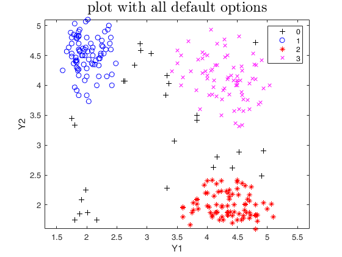
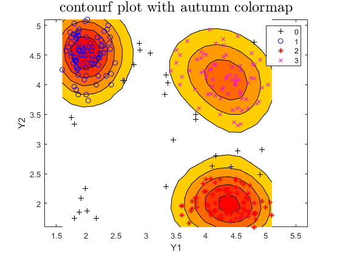
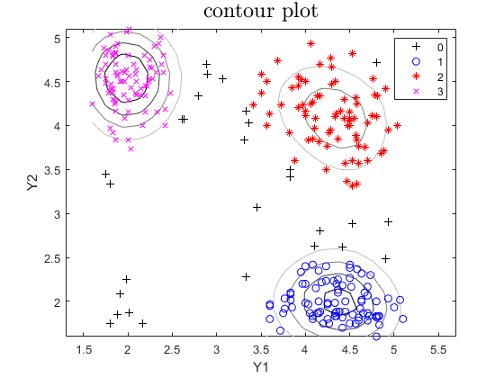

tclust
tclust computes trimmed clustering with restricitons on the eigenvalues
Syntax
Description
tclust partitions the points in the n-by-v data matrix Y into k clusters. This partition minimizes the trimmed sum, over all clusters, of the within-cluster sums of point-to-cluster-centroid distances. Rows of Y correspond to points, columns correspond to variables. tclust returns inside structure out an n-by-1 vector idx containing the cluster indices of each point. By default, tclust uses (squared), possibly constrained, Mahalanobis distances.
tclust of geyser data using k=3, alpha=0.1 and restrfactor=10000.out
=tclust(Y,
k,
alpha,
restrfactor)
tclust of geyser with classification plot.out
=tclust(Y,
k,
alpha,
restrfactor,
Name, Value)
Examples
Related Examples
 tclust of geyser data (output comparison).
tclust of geyser data (output comparison).
tclust of geyser data (output comparison).We compare the output using three different values of restriction factor.
close all
Y=load('geyser2.txt');
restrfactor=10000;
% nsamp = number of subsamples which will be extracted
nsamp=500;
out=tclust(Y,3,0.1,restrfactor,'nsamp',nsamp,'plots',1);
title(['Restriction factor =' num2str(restrfactor)])
restrfactor=10;
out=tclust(Y,3,0.1,restrfactor,'nsamp',nsamp,'refsteps',10,'plots',1);
title(['Restriction factor =' num2str(restrfactor)])
% trimmed k-means solution restrfactor=1
restrfactor=1;
out=tclust(Y,3,0.1,restrfactor,'nsamp',nsamp,'refsteps',10,'plots',1);
title(['Restriction factor =' num2str(restrfactor) '. Trimmed k-means solution'])
cascade
Total estimated time to complete tclust: 4.16 seconds ------------------------------ Warning: Number of subsets without convergence equal to 20.8% Total estimated time to complete tclust: 2.62 seconds ------------------------------ Warning: Number of subsets without convergence equal to 21.6% Total estimated time to complete tclust: 3.35 seconds ------------------------------ Warning: Number of subsets without convergence equal to 20.2%  
Automatic choice of the best number of groups for geyser data.
Automatic choice of the best number of groups for geyser data.
Y=load('geyser2.txt');
maxk=6;
CLACLA=[(1:maxk)' zeros(maxk,1)];
for j=1:maxk
out=tclust(Y,j,0.1,5,'msg',0);
CLACLA(j,2)=out.CLACLA;
end
MIXCLA=[(1:maxk)' zeros(maxk,1)];
MIXMIX=MIXCLA;
for j=1:maxk
out=tclust(Y,j,0.1,5,'mixt',2,'msg',0);
MIXMIX(j,2)=out.MIXMIX;
MIXCLA(j,2)=out.MIXCLA;
end
subplot(1,3,1)
plot(CLACLA(:,1),CLACLA(:,2))
xlim([1 maxk])
xlabel('Number of groups')
ylabel('CLACLA')
subplot(1,3,2)
plot(MIXMIX(:,1),MIXMIX(:,2))
xlabel('Number of groups')
ylabel('MIXMIX')
xlim([1 maxk])
subplot(1,3,3)
plot(MIXCLA(:,1),MIXCLA(:,2))
xlabel('Number of groups')
ylabel('MIXCLA (ICL)')
xlim([1 maxk])

Input Arguments
Output Arguments
More About
References
Garcia-Escudero, L.A.; Gordaliza, A.; Matran, C. and Mayo-Iscar, A. (2008), "A General Trimming Approach to Robust Cluster Analysis". Annals of Statistics, Vol.36, 1324-1345. Technical Report available at http://www.eio.uva.es/inves/grupos/representaciones/trTCLUST.pdf